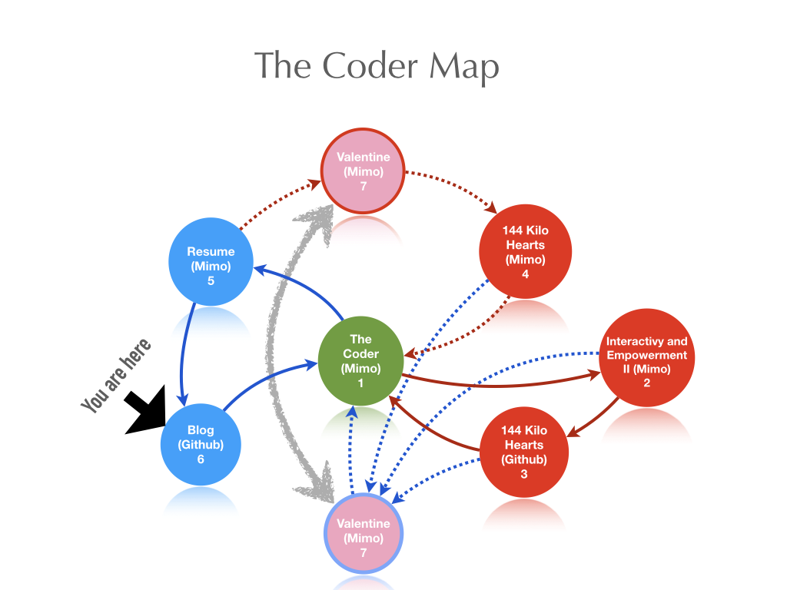

August 25, 2020
Do not be lost on my account.

August 25, 2020
March 25, 2020
This coronavirus is causing more than COVID-19.
It is changing the world's behavior. Lets hope not for a social disease, the least. The life style and economy have already changed and who can really forsee the chain effect it will be left to deal with after the storm is gone?
Chinese government has been accused of hiding important facts and numbers to avoid panic. Italians are living in panic mode on the account of number of victims that now surpasses the numbers in China. Brazilian news on social media and chat groups show the concern about the side effect on the economy and how the misinformation also can potentially cause damages other than the virus and the disease perse.
There is a lot of conversations and actions towards not getting contaminated, and too little about how the progress on treatment and cure for both the virus and disease are at these days, so the numbers keep going up. If it is time for all of us to do their parts, for some of us (health professionals) this part is more than a preventive common sense of matter. It is a choice, it is a career, it is a passion, it is a way of living and therefore it is an obligation. Speak up!
On the other hand the subject has also brought up some good in people as
well, so it can not be all bad, right? Only this time it seems to be PRETTY "bad".
March 02, 2020
Half full and half empty. I can't decide each one.
Oops, that sounds like myself. There I go, whole again.
February 26, 2020
You can be happy forever, says Mauricio. But forever is not everyday, Brian agrees.
So it is ok to feel sad sometimes and happy as you can be.
February 25, 2020
If somebody would have told me a week ago that I would be able to make a website, I would not have believed them.
How could they ever think I would not?